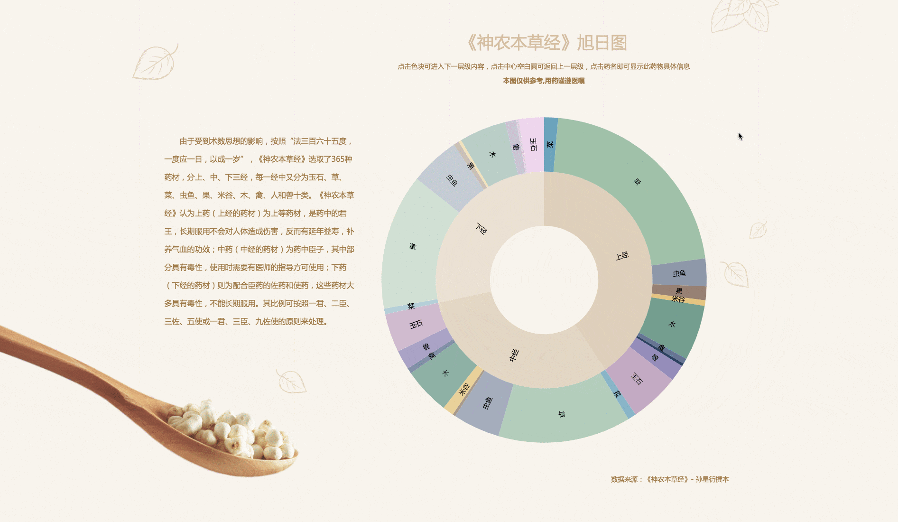
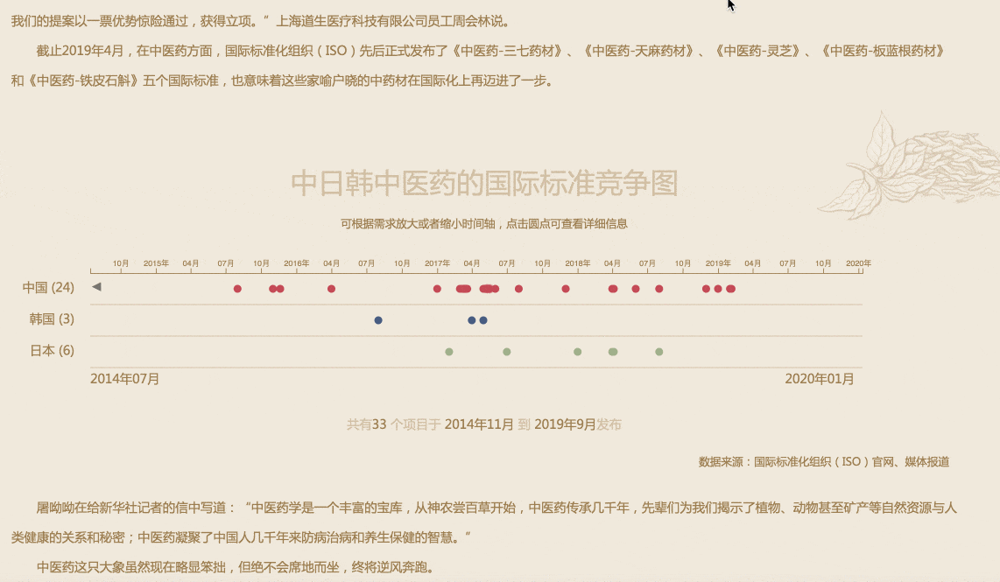
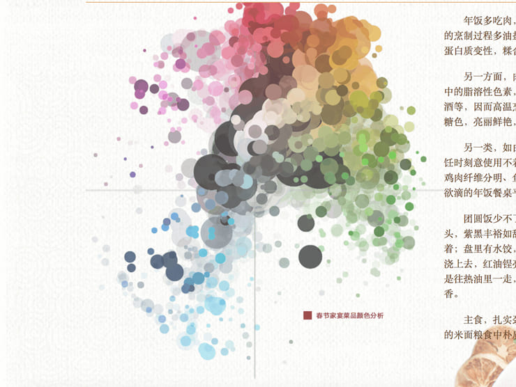
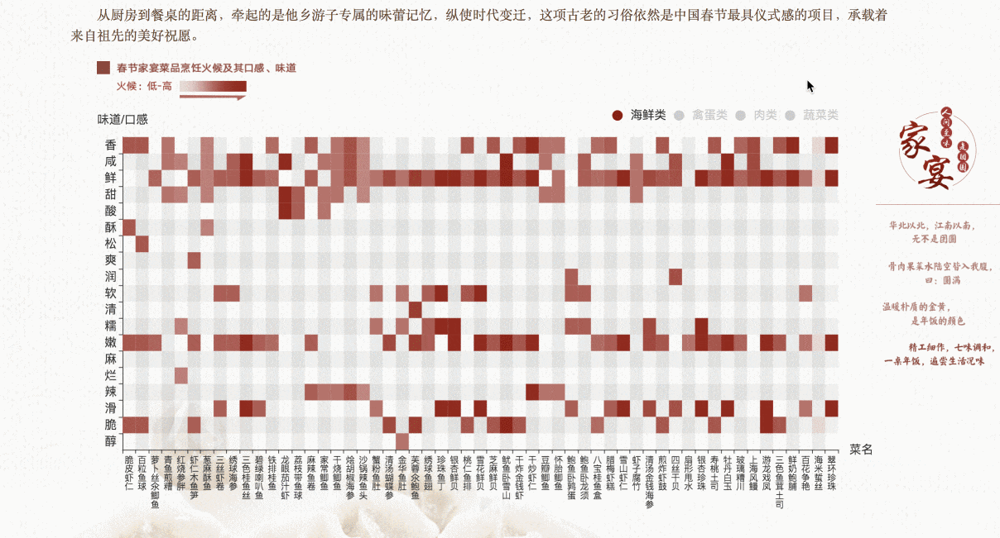

Data visualization is my main jam. D3.js is my favorite toolkit. I am digging into three.js.
CHINESE TRADITIONAL MEDICINE IS NOT AN ELEPHANT SITTING STILL
Collected in the second series of "Chinese Excellent Data News"
The Data News Group of Xinhuanet Media Creatives visualized "Shen Nong's Herbal" of Sun Xingyan's version, which records five flavors, temperaments, categories, attending diseases, origins and "The eighteen incompatible medicaments, the nineteen medicaments of mutual restraint" of 365 medicinal materials，combined with the standardization released by China in Traditional Chinese Medicine of the International Organization for to further demonstrate the role and impact of Chinese medicine on contemporary society.

Zoomable sunburst chart: visualization of "Shen Nong's Herbal"
This chart shows the hierarchy of "Shen Nong's Herbal," each slice represents each category node.

Query graph of "The eighteen incompatible medicaments, the nineteen medicaments of mutual restraint" of 365 medicinal materials

This graph shows the accuracy of traditional Chinese medicine, which involved in popular Kung Fu novels and palace drama. Each medicine has its own color. The same classification of medicine is given the same color scheme. The higher the curve is, the more people read or watched this book/show. The lower the medicine text tag is, the narrow the curve is, the lower the accuracy of the medical efficacy. Deep red means this book/show rated high by users.

Timeline: the competition of China, Japan, and Korea in publishing standardization of Traditional Chinese Medicine in the International Organization

Prevention of fire before "burning" – analyze national ten-year big data of fire
Won the special jury prize of China Data Visualization Creation Competition and 2019 Excellent Emergency News
The Data News Group of Xinhuanet Media Creatives, in conjunction with the fire department, analyzed 7,047 data of major nationwide fire, which recorded since 2008 to find overlooked fire hazards.

Scatter plots chart: Statistics on the major fire cases from 2008 to 2017
This chart shows the major fire cases from 2008 to 2017 divided by four seasons. The deeper the color
is, the more the people died. The bigger the dot is, the more the property damage is. The x-axis means time.
Word cloud: cause of the fire

Bar chart: From 2008 to 2017, the occurrence seasons and time distribution of major fires in China
X-axis means the cause of the fire; the y-axis means the count of fire. The color means a detailed cause of the fire.

Zoomable scatter plots chart: From 2008 to 2017, the number of deaths and fire areas of major fire
X-axis means fire areas; y-axis means province. The red color means "Multi-functional" space; grey means other types of space. The bigger the dot is, the more the people died.
Family reunion feast: reunion is the best taste in the world
The eating family reunion feast in the first month of the lunar calendar is an unchanging tradition for Chinese. The Data News Group of Xinhuanet Media Creatives grabbed 9327 group data from PGC (professionally generated content) data of Chinese traditional dish database and UGC(user-generated content) data of the most popular gourmet recipe website. The spiritual connotation of reunion can be interpreted properly by analyzing the ingredients, spices, colors, tastes, and regional dietary habits.

Sankey diagram: menu combination, region and implication of Spring Festival family fest dishes
The classification of the first line: the regional cuisine of dish
The classification of the second line: the name of the dish
The classification of the third line: the implication of dish
The length of the arrows is proportional to the flow rate.

Interactive force-directed graph: regional cuisines，main ingredients and auxiliary ingredients of Spring Festival family fest dishes
Menu classification: regional cuisines of dishes

Scatterplot chart: the color analysis of Spring Festival family fest dishes
Radius represents the count of dishes.

Interactive heatmap: heat control and taste of Spring Festival family fest dishes
The classification of X-axis: taste
The classification of Y-axis: the name of the dish
Menu: classification of dishes (seafood, eggs, meat, vegetable)
Deeper red means higher heat.

GOODBYE, THANK YOU
This project shows the celebrities who died in 2018 by parallax scroll.
SECRETLY, GREATLY
This project shows the Chinese academician who died in 2018 by parallax scroll.

A CHALLENGING ROAD
Tech was supposed to be the great equalizer. So where are all the black people?


{kind=link}
{kind=link}
{kind=link}
{kind=link}